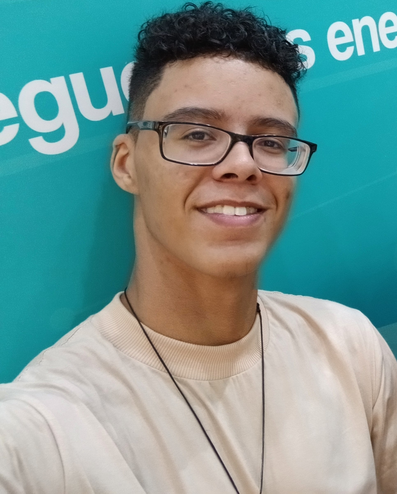

Sou Gabriel Santos Góes, atualmente tenho 17 anos e sou apaixonado por tecnologia e estou em constante aprendizado. Este é um espaço para compartilhar minha trajetória, minhas conquistas e os projetos que desenvolvi até aqui.
Desde pequeno eu gosto muito de tecnologia, e com 10 anos eu decidi seguir nessa area visando desenvolver apps e sites por que gostava muito dessa interação que estava tendo com coisas novas. A partir deste ponto, fui atras de estudar os seriam as bases da area de tecnologia, fiz um curso de hardware para me informar como os computadores funcionam, quais são as peças com maiores tipos de problemas, e como essas maquinas se comunicam entre si e seus sinais. Estudei tambem sobre o pacote office e desenvolvimento de jogos 3d, mas nao consegui aprender tanto.
Em 2024, comecei a aprender de fato sobre programação, como funciona, quais foram as suas origens, quais areas é possivel seguir e até onde é possivel chegar com a area de desenvolvimento. Apos uma analise, começei a me aprofundar no desenvolvimento front-end, pois foi o que me deu uma base de como seria esse ramo, mas tambem experimentei outras areas, como o Back-end, Bobile, Banco de Dados e Blockchain, através de um curso tecnico e medio da escola E.E. Gustavo Peccinini.
Atualmente tenho estudado principalmente front-end, back-end e banco de dados com o futuro objetivo de me tornar um desenvolvedor full-stack, pois acabei gostando de muitas todas as areas listadas acima, e agora estou coloando o conhecimento que adquiri em projetos que possam resolver problemas reais.
Desenvolvido utilizando Python e banco de dados.
Estudando programação web, lógica de programação, banco de dados e boas práticas de software.
Projeto colaborativo desenvolvido em sala, aplicando conhecimentos de HTML, CSS e JavaScript.
Nesse projeto, desenvolvi um site sobre a turma de desenvolvimento de sistema que atualmente faço parte.
Durante meus anos no ensino fundamental, fui reconhecido por meus resultados em provas e fui um dos melhores.
Fui capaz de chegar nas fases finais da Olimpíada Brasileira de Matemática das Escolas Públicas.